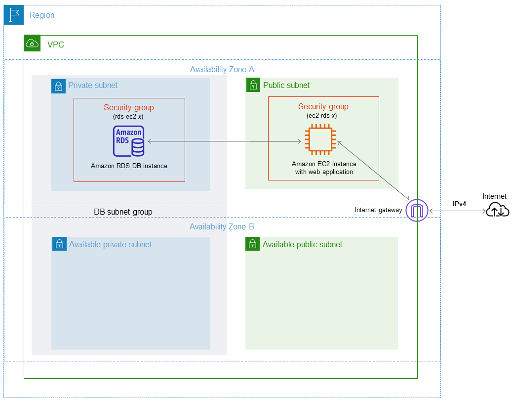
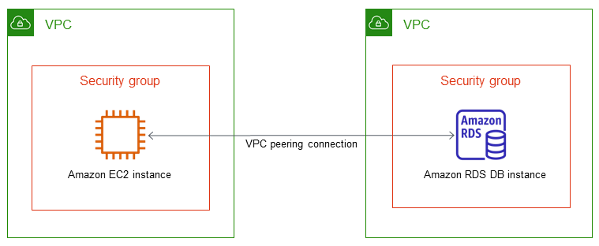
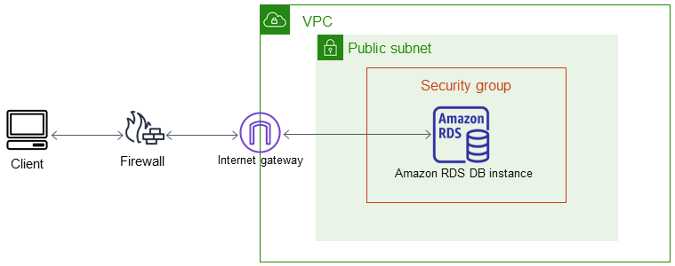
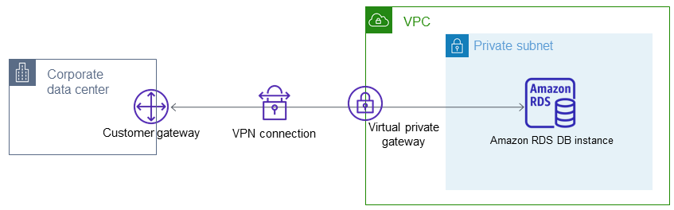

Amazon RDS y Amazon VPC
Amazon Virtual Private Cloud (Amazon VPC) permite lanzar recursos de AWS, como instancias de base de datos de Amazon RDS, en una nube privada virtual (VPC).
Al usar una VPC, podemos controlar un entorno de red virtual. Podemos elegir el rango de direcciones IP, crear subredes y configurar el enrutamiento y las listas de control de acceso. No hay coste adicional por ejecutar una instancia de base de datos en una VPC.
Las cuentas tienen una VPC predeterminada. Todas las nuevas instancias de base de datos se crean en la VPC predeterminada, a menos que especifique otra. La VPC predeterminada tiene tres subredes que se pueden utilizar para aislar recursos dentro de la VPC. La VPC predeterminada también tiene un Internet Gateway que se utiliza para proporcionar acceso a los recursos situados dentro de la VPC desde fuera de la VPC.
Uso de una instancia de bases de datos en una VPC
Si queremos desplegar una instancia de bases de datos, la VPC debe tener dos subredes como mínimo. Estas subredes deben estar en dos zonas de disponibilidad distintas de la Región de AWS en la que desea implementar la instancia de base de datos. Una subred es un segmento del rango de direcciones IP de una VPC y permite agrupar instancias de base de datos según necesidades operativas y de seguridad.
Si se desea que una instancia de base de datos de la VPC sea accesible públicamente, se debe activar los atributos DNS hostnames y DNS resolution.
La VPC debe tener un grupo de seguridad de VPC que permita el acceso a la instancia de base de datos.
Grupo de subredes de bases de datos
Un grupo de subredes de base de datos es una colección de subredes (normalmente privadas) que se crean en una VPC y que después se asignan a las instancias de bases de datos. Para crear un grupo de subredes de base de datos, se han de especificar las subredes que lo compondrán.
Cuando crea una instancia de base de datos en una VPC, se debe elegir un grupo de subredes de base de datos. Desde el grupo de subred de base de datos, Amazon RDS elige una subred y una dirección IP dentro de esa subred para asociarla con la de base de datos. La base de datos utiliza la zona de disponibilidad que contiene la subred. Amazon RDS siempre asigna una dirección IP desde una subred que tiene espacio de dirección IP libre.
Para implementaciones Multi-AZ, Amazon RDS podrá crear una instancia en espera en otra zona de disponibilidad si fuera necesario.
Las subredes de un grupo de subredes de base de datos son públicas o privadas. Las subredes son públicas o privadas, en función de la configuración que establezca para sus listas de control de acceso a la red (ACL de red) y tablas de enrutamiento. Para que una instancia de base de datos sea accesible públicamente, todas las subredes del grupo de subredes de base de datos deben ser públicas. Si una subred asociada a una instancia de base de datos de acceso público cambia de pública a privada, eso puede afectar a la disponibilidad de la instancia.
Escenarios de acceso a una instancia de base de datos en una VPC
Acceso a una instancia de base de datos en una VPC desde una instancia de Amazon EC2 de la misma VPC
Un uso común de una instancia de base de datos en una VPC es compartir datos con un servidor de aplicaciones que se ejecuta en una instancia de Amazon EC2 de la misma VPC.

Acceso a una instancia de base de datos en una VPC desde una instancia EC2 de otra VPC
Cuando una instancia de base de datos está en una VPC que no coincide con la de la instancia EC2 que se está utilizando para obtener acceso a ella, se puede usar una conexión VPC peering para obtener acceso a la instancia de base de datos.

Acceso a una instancia de base de datos en una VPC desde una aplicación cliente a través de internet
Para acceder a una instancia de base de datos en una VPC desde una aplicación cliente a través de internet, se puede configurar una VPC con una subred pública única y un Internet Gateway para permitir la comunicación a través de internet.

Una instancia de base de datos en una VPC a la que se accede mediante una red privada
Si la instancia de base de datos no es accesible públicamente, existen las siguientes opciones para acceder a ella desde una red privada:
- Una conexión de Site-to-Site VPN de AWS.
- Una conexión de Direct Connect.
- Una conexión de AWS Client VPN.
